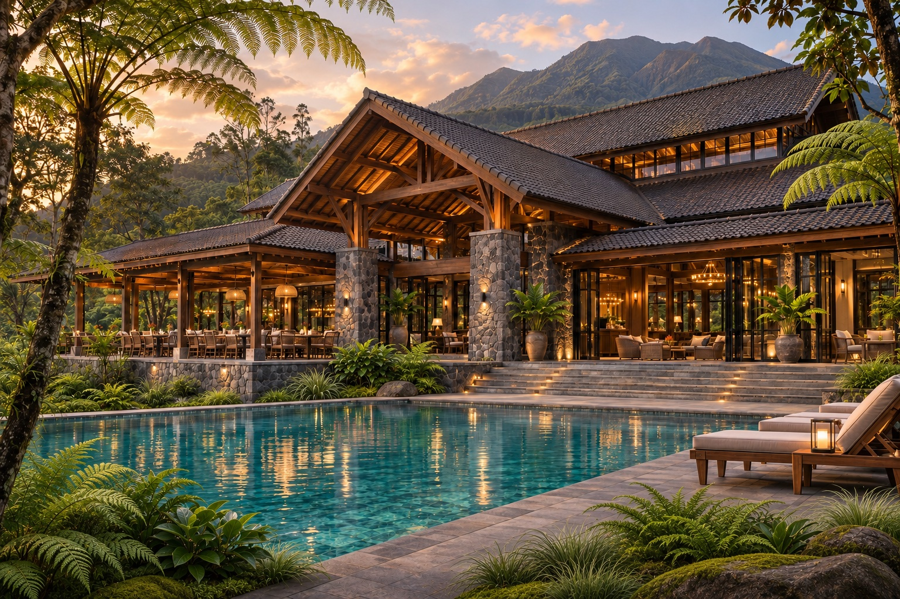
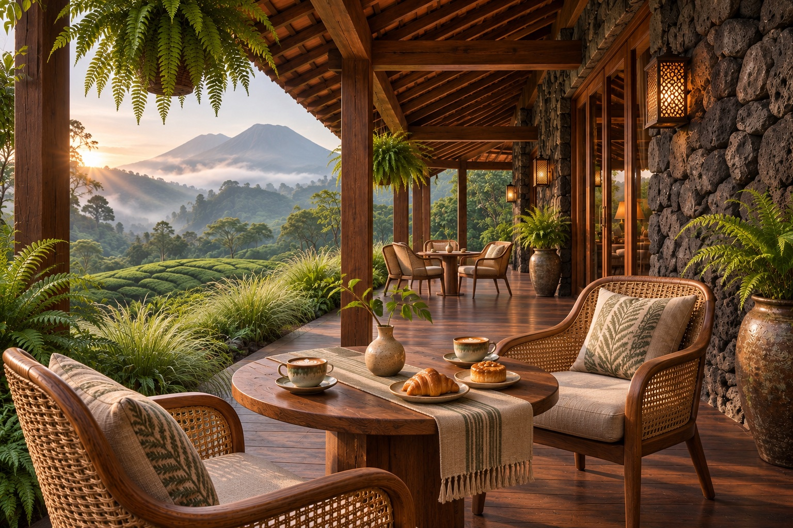
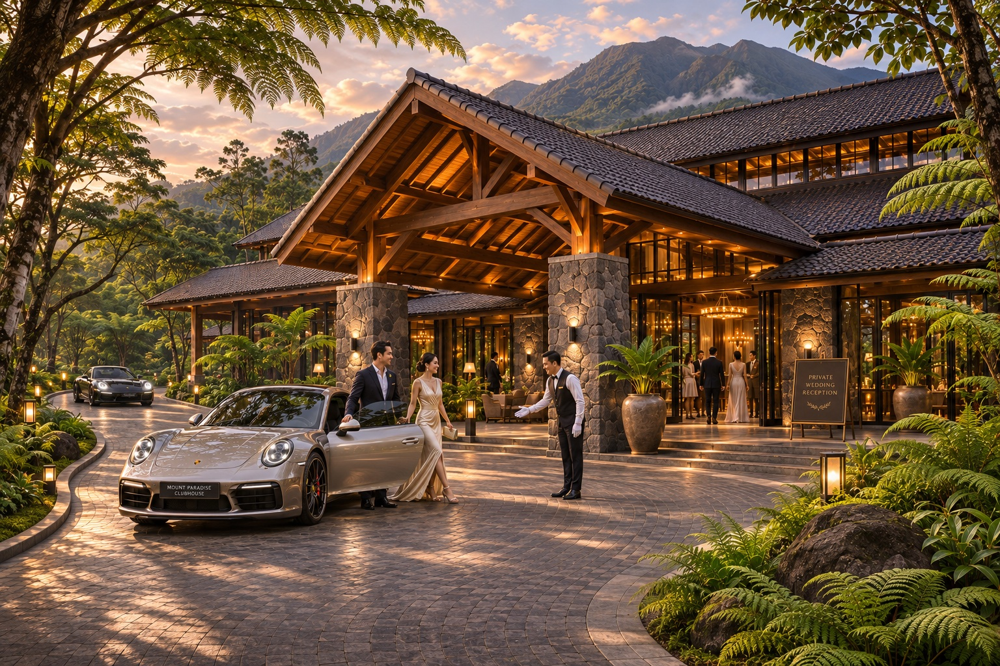
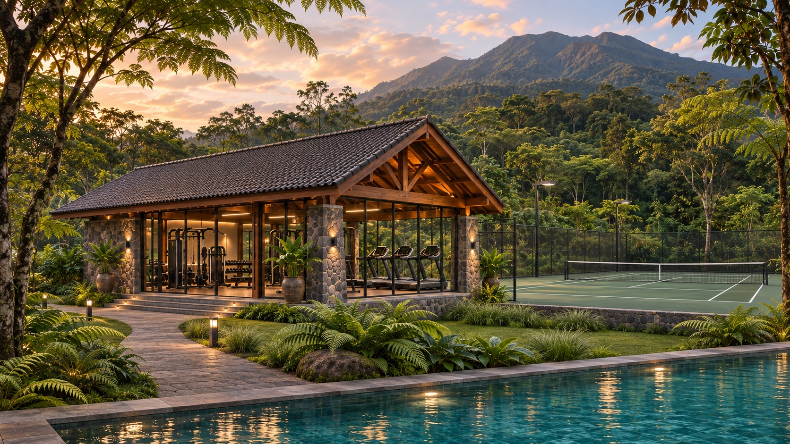

The Clubhouse / Mount Paradise
The heart of
the mountain.
A favorite table. A mountain terrace. An occasion worth remembering.
Discover moreThe Clubhouse & its gardens
One beautiful place.
Many ways to belong.
The Clubhouse is envisioned as the social heart of Mount Paradise: restaurant, bar, café and lounges opening onto the pool and mountain terraces. A separate Spa Pavilion and Recreation Pavilion extend the experience through the gardens.
The restaurant / Bar / Mountain patio
A table with
a different outlook.

Inside, warmly gathered.
The dining wing carries the stone pillars, exposed teak and sheltered roofline of the Clubhouse into an intimate restaurant. A polished bar offers a place to meet before dinner or settle into the evening.
Outside, the whole mountain.
On the mountain-facing side, the restaurant opens onto a generous patio. Long lunches, sunset drinks and candlelit dinners share an uninterrupted sense of the landscape.

Coffee / Conversation / A slower morning
Take your
usual seat.
A relaxed café corner with comfortable chairs, small tables and the quiet pleasure of a good view. Come for coffee and something fresh from the kitchen; stay for a book, a conversation or a second cup.
Green ferns, natural stone and warm timber keep the setting calm. The mountains provide the color.
Weddings / Celebrations / Private gatherings
Some evenings
deserve this setting.

An arrival of its own.
A dedicated valet approach curves toward the sheltered Clubhouse entrance. Guests step from the car into a warm welcome, with an arrival sequence kept separate from the pool terraces and garden paths.
A gathering to remember.
The restaurant, lounges and mountain patio are envisioned for wedding receptions, elegant private dinners, milestone celebrations and high-end events. Spaces flow from welcome drinks to dinner and an evening beneath the eaves.
The pool garden
A little movement.
A long exhale.
A full-size pool sits at the center of the shared gardens. Swim before breakfast, rest on the terrace, or follow the garden path toward the Recreation Pavilion.
The Recreation Pavilion
Room to move.
Space to play.

A gym facing the gardens.
A low, separate pavilion beyond the pool accommodates strength and cardio training, with wide glazing bringing the landscape into the workout. Its stone and timber architecture belongs to the same family as the Clubhouse.
A court among the trees.
The tennis court sits alongside the gym, connected by sheltered paths and green planting. Keeping active recreation together gives it room to breathe while preserving the atmosphere of the restaurant and lounges.

The Spa Pavilion / A quieter garden
A world
of its own.
Tucked into a quieter part of the gardens, the Spa Pavilion has its own roofline, bathing pools and treatment spaces. A short landscaped walk connects it to the Clubhouse.
Warm stone, open forest views and the sound of water create a setting apart from the energy of dining, events and sport.
The Mount Paradise Club
Your private home.
A shared mountain life.
The Clubhouse, Spa Pavilion and Recreation Pavilion form a connected family of places, linked by the pool garden and stone paths. Club Membership is envisioned around this shared world, close to the privacy of your own cabin or lodge.
Find your mountain home